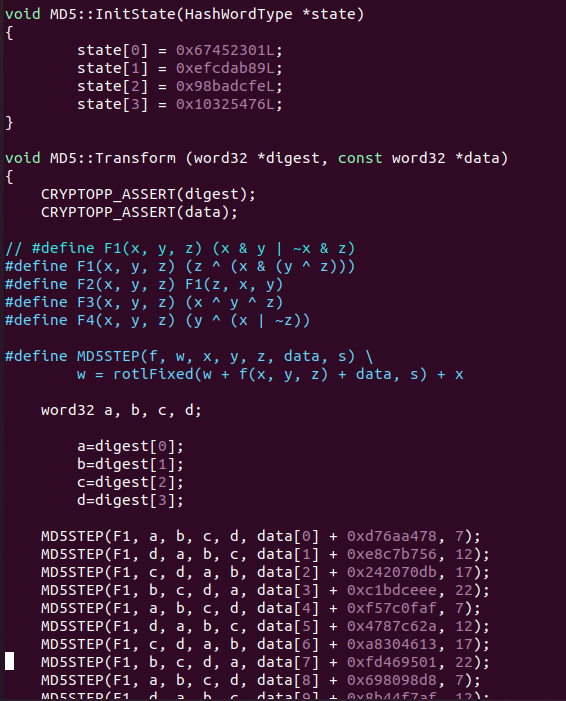

crypto++库交叉编译与MD5编译优化分析
交叉编译
环境
Ubuntu 20
crypto++ 8.8
g+±arm-linux-gnueabi 9 (.4.0
安装依赖
交叉编译工具链
1 | sudo apt update |
密码库
1 | git clone <https://github.com/weidai11/cryptopp.git> |
设定环境
编辑TestScripts中的setenv-embedded.sh
1 | ARM_EMBEDDED_CXXFLAGS="-|/usr/arm-linux-gnueabi/include/c++/9 -|/usr/arm-linux-gnueabi/include/c++/9/arm-linux-gnueabi" |
主要需要改版本，根据路径查看
编译
1 | sudo make -f GNUmakefile-cross |
刚开始报链接问题，找不到库之类的，还以为是环境设置问题。
/usr/lib/gcc-cross/arm-linux-gnueabi/9/…/…/…/…/arm-linux-gnueabi/bin/ld: cannot find /usr/arm-linux-gnueabi/lib/libc.so.6 inside /usr/arm-linux-gnueabi
但再次运行make，又发现出现的都是g++而不是arm-linux-gnueabi-g++，参考https://stackoverflow.com/questions/67920098/cryptopp-make-arm-32bit-shared-library 在GNUmakefile-cross中添加
1 | CXX := arm-linux-gnueabi-g++ |
检查
参考
https://www.cryptopp.com/wiki/ARM_Embedded_(Command_Line)
crypto++库分析MD5分析
实现方法
源码和其他库以及where’s crypto签名都差不多。



where’s crypto匹配到MD5的Variant A签名
优化层级
O0
未被优化
文件大小：25330KB
指令统计
基本就是ADD、SUB、AND、EOR、ORR

O1
尝试减小生成代码的尺寸，以及缩短执行时间，但并不执行需要占用大量编译时间的优化
文件大小：40227KB
可能的优化策略：

交叉编译器查看开启的优化选项并对比GCC官方文档的描述（好像选项有一些差异）
finline(函数内联）
官方文档中没有fline，即函数内联，但是直接查看编译器的优化选项则有，分析反汇编代码也有。
将rotlFixed函数内联


循环左移转循环右移（ROR）
ARM架构中，没有循环左移指令，只有循环右移指令ROR。对于32位的，循环左移七，则变成32-7=25。

-fgcse 复写传播
a、b、c、d都来源于函数参数digest，所以删除重复变量a、c、d，然后直接用digest计算，不再定义额外变量，但是b=digest[1]还是被保留下来。

-fprefetch-loop-arrays （？）
官方文档：
If supported by the target machine, generate instructions to prefetch memory to improve the performance of loops that access large arrays.
This option may generate better or worse code; results are highly dependent on the structure of loops within the source code.
不确定算不算这一项策略？
提前访问data数组，以便提高速度。用寄存器存储data数组中的值

类似常量折叠？
将最后一步合并到后面运算

-fcombine-stack-adjustments（？）
跟踪堆栈调整（push or pop）和堆栈内存引用，然后尝试找到组合它们的方法。
将R4-R11全部一起push？

疑惑
将部分操作分开计算，但是好像也没做公共子表达式消除？

指令统计
指令数量大量减少

O2
执行几乎所有的不包含时间和空间折中的优化。编译时间变长，但提高了生成代码的执行效率
fschedule-insns（指令顺序）
可以看到指令顺序做了些许调整
通过指令重排来减少所需数据未准备好，导致CPU需要停顿下来等待数据就绪的延迟。
除此之外，还有一些优化选项也会导致指令重排，比如重排指令以提高代码的局部性，提高cache命中率。绝大多的编译乱序指令重排并不会带来程序的执行逻辑异常，因为编译器在重排指令前会对上下文进行分析，确保重排前的指令和重排后的指令执行结果是等效的。
但是编译器仅能保证单线程下执行结果的正确性，多线程的执行环境下就有可能由于指令重排导致偶现的bug，而且不同编译器最终生成的指令可能会不一致，进而导致需要特定版本&特定编译器才能复现。

最后一部分拆解运算，并重排顺序。

疑惑
- 就这一部分分开计算，但是其他类似的都没有

- 增加取反操作，但还是没有用到公共子表达式消除

指令统计
指令数量相比O1级别优化少量减少

O3
反汇编、反编译的代码都一样。没有其余的改进
指令统计
和优化级别O2一样